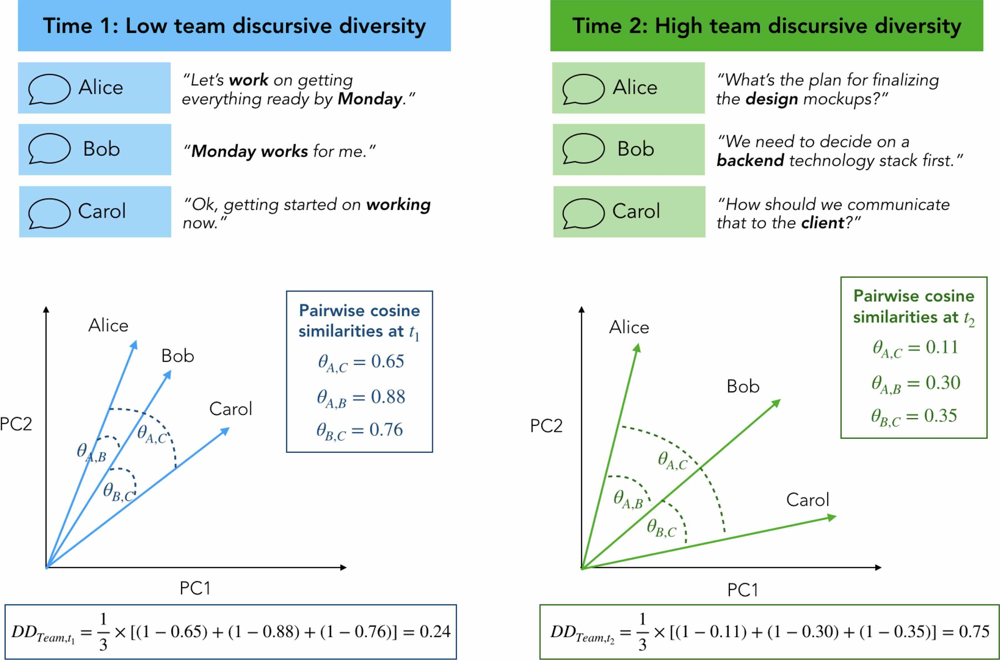

四、Mind模块¶
词嵌入中蕴含着人类的认知信息，以往的词嵌入大多是比较一个概念中两组反义词与某对象的距离计算认知信息。
多个对象与某概念的语义远近，职业与性别，某个职业是否存在亲近男性，而排斥女性
多个对象在某概念向量投影的大小， 人类语言中留存着对不同动物体积的认知记忆，如小鼠大象。动物词在词向量空间中是否能留存着这种大小的记忆
本模块主要是利用已训练出的word2vec模型，挖掘潜在的态度偏见、刻板印象等。 这部分难度较大， 建议有精力且电脑性能好的同学可以用 cntext 训练模型， 再来实验Mind模块。
模块 |
函数(类) |
功能 |
|---|---|---|
mind |
|
测量语义投影 |
mind |
|
测量语义距离 |
mind |
|
测量发散思维(创造力) |
mind |
|
测量语言差异性(认知差异性) |
mind |
ct.procrustes_align(base_wv, other_wv) |
两个word2vec进行语义对齐，可反应随时间的社会语义变迁 |
4.1 sematic_distance()¶
多个对象与某概念的语义远近，例如成功与性别，成功是否存在亲近男性，而排斥女性

ct.sematic_distance(wv, words, c_words1, c_words2)
wv 模型数据， 数据类型为 gensim.models.keyedvectors.KeyedVectors。
words、c_words2、c_words2 均为词语列表
分别计算 words 与 c_words1 、c_words2 语义距离，返回距离差值。例如
male_concept = ['male', 'man', 'he', 'him']
female_concept = ['female', 'woman', 'she', 'her']
software_engineer_concept = ['engineer', 'programming', 'software']
d1 = distance(male_concept, software_engineer_concept)
d2 = distance(female_concept, software_engineer_concept)
如果 d1-d2<0，说明在语义空间中，software_engineer_concept 更接近 male_concept ，更远离 female_concept 。
换言之，在该语料中，人们对软件工程师这一类工作，对女性存在刻板印象(偏见)。
import cntext as ct
# glove_w2v.6B.100d.txt链接: https://pan.baidu.com/s/1MMfQ7M0YCzL9Klp4zrlHBw 提取码: 72l0
g_wv = ct.load_w2v('data/glove_w2v.6B.100d.txt')
engineer = ['program', 'software', 'computer']
man_words = ["man", "he", "him"]
woman_words = ["woman", "she", "her"]
ct.sematic_distance(wv=g_wv,
words=engineer,
c_words1=man_words,
c_words2=woman_words)
Run
-0.5
数值小于0，在语义空间中，工程师更接近于男人，而不是女人。
4.2 sematic_projection()¶
多个对象在某概念向量投影的大小
ct.sematic_projection(wv, words, c_words1, c_words2)
wv 模型数据， 数据类型为gensim.models.keyedvectors.KeyedVectors。
words、c_words2、c_words2 均为词语列表
为了解释词向量模型的语义投影，我使用了 2022 年 Nature 论文中的图片[@Grand2022SemanticPR]。 关于动物的名字，人类对动物大小的认知信息隐藏在语料库文本中。 通过将LARGE WORDS 和SMALL WORDS的含义用不同的animals的向量投影，动物在size向量上的投影（就像下图中的红线 ) 得到，因此可以通过计算比较动物的大小。
根据两组反义词 c_words1 , c_words2 构建一个概念(认知)向量, words中的每个词向量在概念向量中投影，即可得到认知信息。
分值越大，words 越位于 c_words2 一侧。
Grand, G., Blank, I.A., Pereira, F. and Fedorenko, E., 2022. Semantic projection recovers rich human knowledge of multiple object features from word embeddings. Nature Human Behaviour, pp.1-13."

例如，人类的语言中，存在尺寸、性别、年龄、政治、速度、财富等不同的概念。每个概念可以由两组反义词确定概念的向量方向。
以尺寸为例，动物在人类认知中可能存在体积尺寸大小差异。
import cntext as ct
animals = ['mouse', 'cat', 'horse', 'pig', 'whale']
small_words= ["small", "little", "tiny"]
large_words = ["large", "big", "huge"]
# wiki_wv = ct.load_w2v('wiki的word2vec模型文件路径')
# wiki_wv
# In size conception, mouse is smallest, horse is biggest.
# 在大小概念上，老鼠最小，马是最大的。
ct.sematic_projection(wv=wiki_wv,
words=animals,
c_words1=small_words,
c_words2=large_words)
Run
[('mouse', -1.68),
('cat', -0.92),
('pig', -0.46),
('whale', -0.24),
('horse', 0.4)]
关于尺寸的认知，人类在文本中隐含着老鼠较小，马较大。
4.3 divergent_association_task()¶
PNAS | 使用语义距离测量一个人的创新力(发散思维)得分。一些理论认为，有 创造力 的人能够产生更多 发散性 的想法。如果这是正确的，简单地让被试写 N 个不相关的单词，然后测量这N个词的语义距离， 作为发散思维的客观衡量标准。
ct.divergent_association_task(wv, words)
wv 模型数据， 数据类型为 gensim.models.keyedvectors.KeyedVectors。
words词语列表
low_words = ["arm", "eyes", "feet", "hand", "head", "leg", "body"]
average_words = ["bag", "bee", "burger", "feast", "office", "shoes", "tree"]
high_words = ["hippo", "jumper", "machinery", "prickle", "tickets", "tomato", "violin"]
# 导入模型，得到wv。
# wv = ct.load_w2v('wiki的word2vec模型文件路径')
print(ct.divergent_association_task(wv, low_words)) # 50
print(ct.divergent_association_task(wv, average_words)) # 78
print(ct.divergent_association_task(wv, high_words)) # 95
Run
50
78
95
4.4 discursive_diversity_score()¶
ct.discursive_diversity_score(wv, words)
wv 模型数据， 数据类型为 gensim.models.keyedvectors.KeyedVectors。
words词语列表
返回一个数值

高绩效团队是那些具有调节共享认知以适应不断变化的任务要求的集体能力的团队：在进行构思任务时，它们表现出更高的话语多样性，在执行协调任务时，表现出较低的话语多样性。
4.5 procrustes_align()¶
该函数主要用于反映同一研究对象随着时间推进的社会文化变迁，或者同一时间范围内两个被研究主体间的差异。
ct.procrustes_align(base_wv, other_wv, words=None)
base_wv (gensim.models.keyedvectors.KeyedVectors): 基准语言模型
other_wv (gensim.models.keyedvectors.KeyedVectors): 其他语言模型
words (list, optional): 是否根据词典words对模型进行对齐， 对齐结束后的模型中含有的词不会超出words的范围； 默认None.
由于不同语料训练的Word2Vec模型无法直接比较， 需要先选定一个基准模型 base_embed， 之后根据 base_embed 对其他模型 other_embed 进行调整，调整后的模型就可以使用前面的语义距离函数或者语义投影函数。 这一过程用到的算法叫做 procrustes正交算法。
这里推荐一篇 可视化 | 人民日报语料反映七十年文化演变